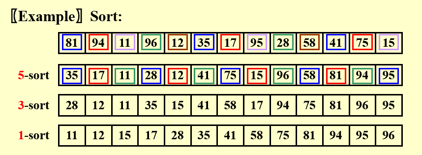
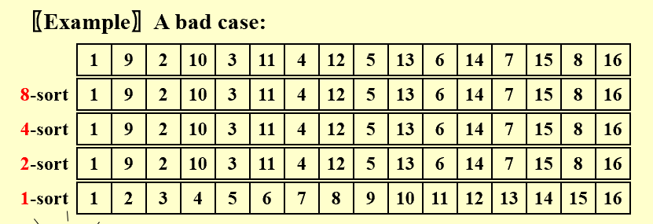
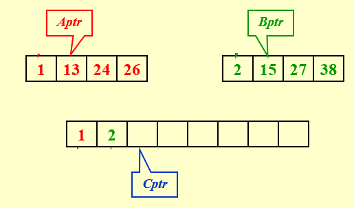
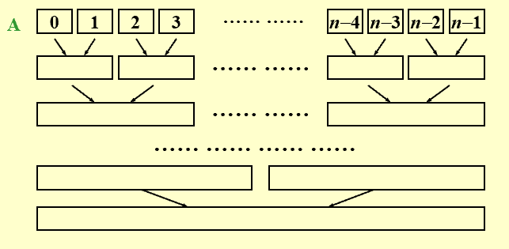

Sorting¶
0 Preliminaries¶
-
假定处理的都是整数数组。
-
算法都是基于比较的排序。
-
整个排序过程都在主内存中完成。
1 插入排序 Insertion Sort¶
基本思路是，每次都把一个待排序的数和排好序的数组进行比较，找到位置后插入，代码实现如下
void InsertionSort ( ElementType A[ ], int N )
{
int j, P;
ElementType Tmp;
for ( P = 1; P < N; P++ ) {
Tmp = A[ P ]; /* the next coming card */
for ( j = P; j > 0 && A[ j - 1 ] > Tmp; j-- )
A[ j ] = A[ j - 1 ];
/* shift sorted cards to provide a position
for the new coming card */
A[ j ] = Tmp; /* place the new card at the proper position */
} /* end for-P-loop */
}
这种方法，最坏情况的时间复杂度为 \(O(N^2)\) ，最好情况的时间复杂度为 \(O(N)\) 。
2 简单排序算法的下界¶
逆序对 Inversion 指数组中的两个数不满足要求的排序方式。例如，数组 [34, 8, 64, 51, 32, 21] 有 9 个逆序对。
每次交换相邻的两个数，只能消除一个逆序对；因此，任何基于交换相邻元素的排序算法，都有 \(O(N^2)\) 级别的时间复杂度。
更好的办法是，进行更大跨度的交换，每次消除多个逆序对。
3 希尔排序 Shell Sort¶
根据以上讨论，希尔排序在插入排序的基础上，希望更高效地消除逆序对。基本思路是：
-
定义增量序列 \(h_1 < h_2 < \cdots < h_t\) ，并且 \(h_1 = 1\) ；
-
从序列最大的一端开始，每次进行以 \(h_k\) 为间隔的排序，即 \(k = t, t-1, \cdots, 1\) 。
例子

一个重要性质是，经过 \(h_k\) 排序后，再继续排序，并不会影响 \(h_k\) 阶的有序性。
代码实现
对于长度为 \(N\) 的数组，一般取：
\(\(h_t = [N / 2], \quad h_k = [h_k / 2].\)\)
void Shellsort( ElementType A[ ], int N )
{
int i, j, Increment;
ElementType Tmp;
for ( Increment = N / 2; Increment > 0; Increment /= 2 )
/*h sequence */
for ( i = Increment; i < N; i++ ) { /* insertion sort */
Tmp = A[ i ];
for ( j = i; j >= Increment; j - = Increment )
if( Tmp < A[ j - Increment ] )
A[ j ] = A[ j - Increment ];
else
break;
A[ j ] = Tmp;
} /* end for-I and for-Increment loops */
}
希尔排序非常适合处理中等规模的数据（几万条级别）。
最坏情况分析¶
希尔排序最坏情况下的时间复杂度为 \(\Theta(N^2)\) ，例如

注意到，上面的情况增量序列为 8，4，2，1 其中 8、4、2 都有公约数 2 ，即增量之间不互质，这导致多个增量效果被削弱。
改进最坏情况¶
对于增量序列需要更好的选择，我们引入 Hibbard's Increment Sequence ，它规定
确保相邻增量之间没有公因子。这是一个固定的增量序列，实际排序的时候，我们找到其中第一个小于待排序数组规模的值作为初始增量。
Hibbard 增量序列能把希尔排序最坏情况的时间复杂度提升至 \(\Theta(N^{\frac{3}{2}})\) 。
另外，Sedgewick 提出了更复杂的增量序列 1，5，19，41，109 ··· ，能把最坏情况的时间复杂度提升至 \(O(N^{\frac{4}{3}})\) 。
4 堆排序 Heap Sort¶
堆排序可以看成选择排序的改进。
最简单的堆排序就是把原数组变成最小堆，每次取出根节点的值放入新数组
{
BuildHeap( H ); /* O( N ) */
for ( i=0; i<N; i++ )
TmpH[ i ] = DeleteMin( H ); /* O( log N ) */
for ( i=0; i<N; i++ )
H[ i ] = TmpH[ i ]; /* O( 1 ) */
}
时间复杂度 \(T(N) = O(N \log{N})\) ，表现很好；因为取出的节点需要存储位置，空间需求翻倍了，不太好。
考虑对上面这个算法进行空间优化：由于每次取出最小堆根节点的元素后，需要将堆中最后一个元素放到根节点处；这会空出一个位置，可以把取出的值放进去；最后得到的是一个降序序列。
如果想要一个升序排序的序列，改成建立最大堆就可以。
代码实现
void Heapsort( ElementType A[ ], int N )
{
int i;
for ( i = N / 2; i >= 0; i-- ) /* BuildHeap */
PercDown( A, i, N );
for ( i = N - 1; i > 0; i-- ) {
Swap( &A[ 0 ], &A[ i ] ); /* DeleteMax */
PercDown( A, 0, i );
}
}
对于规模为 \(N\) 的数组进行堆排序，平均时间复杂度为 \(\Theta(N \log{N})\) ，但是实际应用中通常比使用 Sedgewick 增量序列的希尔排序慢一点。
5 归并排序 Merge Sort¶
合并两个有序列表¶
先考虑一个问题：如何快速合并两个升序的列表？

如上图，两个有序列表分别用指针 Aptr 和 Bptr 标记当前待合并元素，指针 Cptr 则标记新序列当前待填入位置。
每次只要比较 Aptr 与 Bptr 指向元素的大小，把小的放入 Cptr 的位置，直到某个序列遍历完，有序放入另一个序列剩下的元素即可。
这个方法，每个元素被操作一次，时间复杂度为 \(O(N)\) ，其中 \(N\) 是两个有序序列的总规模。
归并排序的实现¶
参考以上合并两个有序列表的方法，我们对数组进行排列时，考虑将一个区间分为左右两半排序，然后合并。
使用递归的方式，当序列只有一个元素时说明有序，整个思路表示为
void MSort( ElementType A[ ], ElementType TmpArray[ ],
int Left, int Right )
{ int Center;
if ( Left < Right ) { /* if there are elements to be sorted */
Center = ( Left + Right ) / 2;
MSort( A, TmpArray, Left, Center ); /* T( N / 2 ) */
MSort( A, TmpArray, Center + 1, Right ); /* T( N / 2 ) */
Merge( A, TmpArray, Left, Center + 1, Right ); /* O( N ) */
}
}
void Mergesort( ElementType A[ ], int N )
{ ElementType *TmpArray; /* need O(N) extra space */
TmpArray = malloc( N * sizeof( ElementType ) );
if ( TmpArray != NULL ) {
MSort( A, TmpArray, 0, N - 1 );
free( TmpArray );
}
else FatalError( "No space for tmp array!!!" );
}
代码实现
/* Lpos = start of left half, Rpos = start of right half */
void Merge( ElementType A[ ], ElementType TmpArray[ ],
int Lpos, int Rpos, int RightEnd )
{ int i, LeftEnd, NumElements, TmpPos;
LeftEnd = Rpos - 1;
TmpPos = Lpos;
NumElements = RightEnd - Lpos + 1;
while( Lpos <= LeftEnd && Rpos <= RightEnd ) /* main loop */
if ( A[ Lpos ] <= A[ Rpos ] )
TmpArray[ TmpPos++ ] = A[ Lpos++ ];
else
TmpArray[ TmpPos++ ] = A[ Rpos++ ];
while( Lpos <= LeftEnd ) /* Copy rest of first half */
TmpArray[ TmpPos++ ] = A[ Lpos++ ];
while( Rpos <= RightEnd ) /* Copy rest of second half */
TmpArray[ TmpPos++ ] = A[ Rpos++ ];
for( i = 0; i < NumElements; i++, RightEnd - - )
/* Copy TmpArray back */
A[ RightEnd ] = TmpArray[ RightEnd ];
}
如果考虑非递归方式，则自底向上

分析¶
推导归并排序的时间复杂度，我们知道
因此 \(T(N) = O(N + N \log{N})\) 。
归并排序需要线性的额外内存空间 \(O(N)\) ，而且内存中复制数组较慢；因此，一般不用于内存排序，而是常用于外存排序。
Stable & In-place¶
为了帮助评价排序算法，我们提出两个概念：
-
Stable 如果有多个值相同的元素，在排序前后的相对位置不变，那么这个排序算法称为 stable ；
-
In-place 如果这个排序算法不需要额外存储空间（仅需要几个临时变量或指针不算），那么称为 in-place 。
| Stable | In-place | |
|---|---|---|
| Insert | ✔️ | ✔️ |
| Shell | ❌ | ✔️ |
| Heap | ❌ | ✔️ |
| Merge | ✔️ | ❌ |
6 快速排序 Quick Sort¶
思路¶
采用递归分治的办法，对于每次得到的一个数组，选出一个枢纽 pivot ，把该数组分为小于自身和大于自身的两个不相交子集，然后继续处理这两个数组，以此类推。
表示为伪代码：
void Quicksort ( ElementType A[ ], int N )
{
// 元素个数小于2 无需排序，直接返回
if ( N < 2 ) return;
// 在数组 A 中任意挑选一个元素
pivot = pick any element in A[ ];
// 将去掉 pivot 后的数组划分为两个互不相交的子集
Partition S = { A[ ] \ pivot } into two disjoint sets:
A1 = { a ∈ S | a ≤ pivot }
A2 = { a ∈ S | a ≥ pivot }
// 最终结果 = 对 A1 进行快排拼接上 pivot 拼接上对 A2 进行快排
A = Quicksort ( A1, N1) ∪ { pivot } ∪ Quicksort ( A2, N2);
}
性质
pivot 位置一旦确定，就不会再改变。
最好的情况下，这个算法的时间复杂度为 \(T(N) = O(N \log{N})\) 。
选择 Pivot¶
Pivot 的选择直接关系到快速排序的效率，下面给出一些策略。
-
一种错误的方法是
Pivot = A[0]；- 最坏的情况下，输入
A已经有序，那么快速排序将花费O(N)的时间但是没有实质性工作。
- 最坏的情况下，输入
-
一种安全的方法是随机选择
Pivot；- 缺点是生成随机数很耗费计算资源，系统开销大。
-
更好的办法是 Median-of-Three Partitioning ，即
Pivot = median(left, center, right)；- 选择数组最左端、中间、最右端的中位数，能消除输入有序导致的最坏情况，实际运行效率也比较高。
分区 Partitioning¶
选定 pivot 之后，一般采用双指针法进行分区。基本思路是由两个指针从数组两端出发向中间移动：
-
左指针从左往右走，遇到比 pivot 大的元素停下，
-
右指针从右往左走，遇到比 pivot 小的元素停下，
-
两个指针都停下时，互相交换，然后继续走，重复上述逻辑直到相遇。
极端情况
这样分区，当输入数组所有元素相等时，一端的指针会一直走完数组，导致两个子集极度不平衡，时间复杂度达到 \(O(N^2)\) 。
因此，规定指针遇到等于 pivot 的元素时也停下做交换，这样能保证平衡划分。
处理小数组¶
实际上，当数组规模很小（例如小于 20 ）时，快速排序甚至比插入排序更慢。
解决办法是当目前待处理的数组规模很小时，不用快速排序，而是采用其他对小数组更高效的排序。
综合实现¶
代码实现
// 入口函数
void Quicksort( ElementType A[ ], int N )
{
Qsort( A, 0, N - 1 );
/* A: 数组 */
/* 0: 左指针 */
/* N – 1: 右指针 */
}
/* 找到 pivot 并将需要划分的元素拼成连续的一段 */
ElementType Median3( ElementType A[ ], int Left, int Right )
{
int Center = ( Left + Right ) / 2;
if ( A[ Left ] > A[ Center ] )
Swap( &A[ Left ], &A[ Center ] );
if ( A[ Left ] > A[ Right ] )
Swap( &A[ Left ], &A[ Right ] );
if ( A[ Center ] > A[ Right ] )
Swap( &A[ Center ], &A[ Right ] );
/* 确保 A[ Left ] <= A[ Center ] <= A[ Right ] */
Swap( &A[ Center ], &A[ Right - 1 ] );
/* 现在只需要划分 A[ Left + 1 ] … A[ Right – 2 ] */
return A[ Right - 1 ]; /* 返回 pivot */
}
void Qsort( ElementType A[ ], int Left, int Right )
{
int i, j;
ElementType Pivot;
if ( Left + Cutoff <= Right ) { /* 不是小数组 */
Pivot = Median3( A, Left, Right );
i = Left;
j = Right – 1;
/* 不用 Left+1 和 Right-2 是为了配合接下来的前缀自增/自减 */
for( ; ; ) {
while ( A[ + +i ] < Pivot ) { }
while ( A[ – –j ] > Pivot ) { }
if ( i < j )
Swap( &A[ i ], &A[ j ] );
else
break;
}
/* 划分结束后左指针 i 就停在 pivot 应该去的位置，因此交换 */
Swap( &A[ i ], &A[ Right - 1 ] );
Qsort( A, Left, i - 1 ); /* 排序左边部分数组 */
Qsort( A, i + 1, Right ); /* 排序右边部分数组 */
}
else
/* 小数组用插入排序 */
InsertionSort( A + Left, Right - Left + 1 );
}
算法分析¶
快速排序的时间复杂度可以表示为
即 pivot 左边和右边排序的时间 + 当前层进行分区（双指针扫描整个数组花费线性时间）的时间。
最坏情况¶
每次分区都极度不平衡，退化为
最好情况¶
每次分区都很平衡
平均情况¶
我们假定 pivot 出现在数组任何一个位置的概率均等，那么对于任意的 \(i\) 有
代入公式得到
采用快速排序想法的一个小例题
❓️给定一个包含 \(N\) 个元素的列表和一个整数 \(k\) ，找出其中第 \(k\) 大的元素。
💭利用分区思想，记第一次分区后 pivot 的位置为 \(i\) ，只要比较 \(i\) 与 \(k\) 的大小：
-
如果相等，则 pivot 就是这个元素；
-
如果 \(k < i\) ，则不用管右边，继续排序左边部分数组；
-
如果 \(k > i\) ，则不用管左边，继续排序右边部分数组。
7 大型结构的排序¶
上述的排序算法都是基于比较和交换的，但是对于大型结构，交换的开销非常大。
解决办法是增加一个指针字段指向结构体，交换时只交换指针而不动结构体本身（indirect sorting）。最后如果需要，再按照指针拍好的序调整结构体顺序。
8 排序算法的一般下界¶
任何只基于元素比较的排序算法，最坏情况下的计算时间复杂度下界必然是 \(\Omega(N \log{N})\) 。